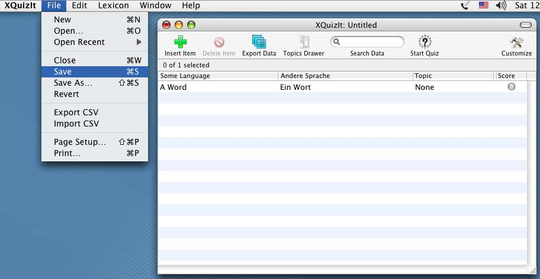
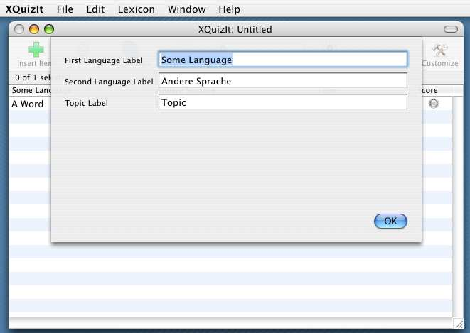
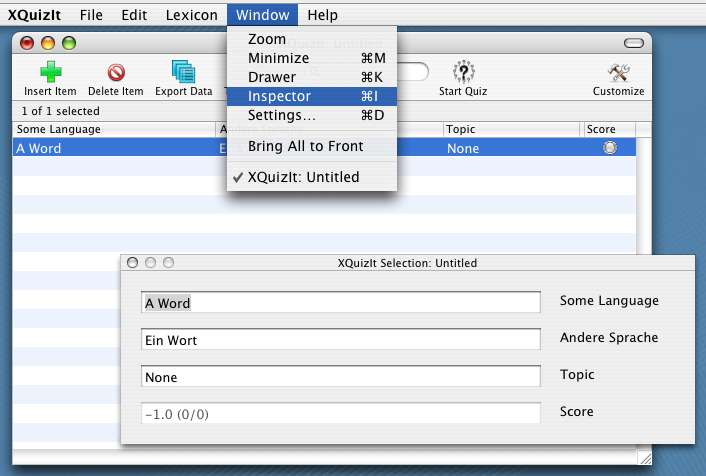
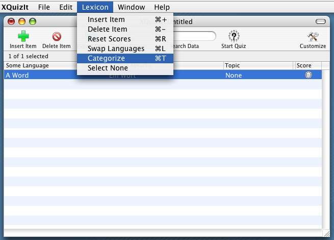

|  | To open a new lexicon, select New from the File menu;
the Cocoa document architecture provides a list of recently-opened documents as well.
The File menu also contains the commands for importing data in CSV-format from text files prepared in other programs.
The document window has a toolbar for commonly-used VocableTrainerX controls. Its search field allows you to filter the table for a set of items containing a particular text string in either of the language fields. The search field does not filter based on the Topic field (but see below, for a discussion of the Topics table in the drawer associated with each window.) You will also notice that when the search field is active, the Save menu item is disabled to prevent overwriting the document's full set of vocabulary with the search set; you can use Save as... to overwrite the file, but you must then confirm that you really want to overwrite an existing file, as usual. |
|  | You can call up a sheet (shown at left) that allows you to customize the labels for the table columns
(these strings are also used to label the data entry fields that appear in the inspector window used for data entry and review and
are also used in the quiz window). The document settings sheet can be opened by selecting Settings... from the Window menu, illustrated in the figure just below. You can set whether a new document opens automatically when VocableTrainerX is launched or re-activated in VocableTrainerX's Preferences window; An inspector window (also shown below) allows you to enter or inspect individual table entries. The inspector is a utility window that floats above the main document window, and is opened a command in the Window menu. Close it by typing ESC while it is the key window. |
|  | To add a new entry to the table, press the Insert Item button. The new item will be added with
placeholder values that you can edit either by typing in the data entry (inspector) fields or by editing the table cells
directly. Tabbing between cells in the table or in the inspector window is enabled using each window's standard key-view loop. Pressing Return while editing any inspector field commits the data and simultaneously adds a new placeholder item to the table. This is handy if you need to enter a group of new vocabulary items in quick succession. Simply edit the new item (which will be selected) in the inspector window and press Return when finished to start a new item. When a single entry or group of entries is selected in the table, the Delete Item button will be enabled. Both addition and deletion of entries is usually undoable, and is also supported by Insert and Delete menu items with keyboard shortcuts, which appear in VocableTrainerX's Lexicon menu. |
|  | The Lexicon menu allows you to perform certain operations on single
table entries or selected groups of entries. The Categorize item allows you to change the Category (i.e., Topic)
entry for any selected items collectively. A sheet will be displayed with a field in which to specify the new category.
The Swap Languages item is handy if you have made the common data-entry error of swapping values in the language columns. The Reset Scores item will zero the quiz scores (see below) of selected items, or of all of them (if none are selected). Once you have saved a file, previous changes will not be undoable. Note that when multiple entries are selected, some inspector fields may indicate "Multiple Values". |